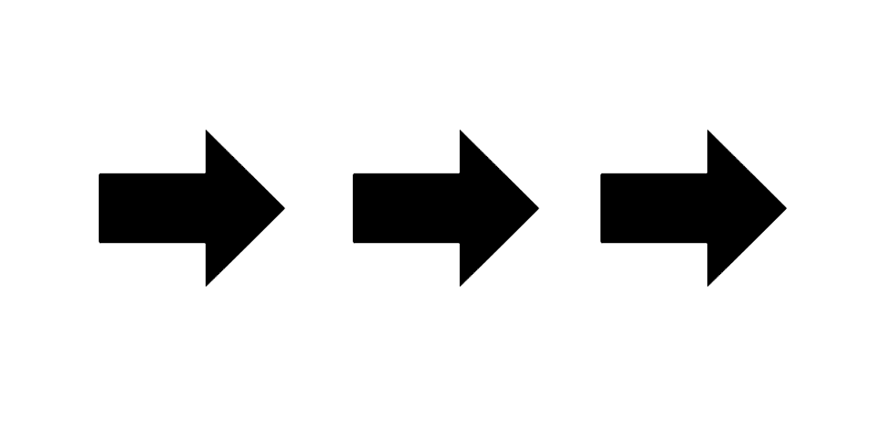

디자이너 엄태욱(Te-euk, Real moomin)은 홍익대학교 시각디자인과에서 디자인을 공부했다.
마이크로 타이포그라피, 특히 웹에 기반한 스크린-모바일 타이포그라피 작업을 주로 하며, 프리랜서 개발자-디자이너로 일하는 동안 패션, 그래픽 디자이너, 뮤지션들과 협업했다.
현재는 NAVER에서 커뮤니티 서비스를 설계하고 있으며, 가상의 공간, 사람과 사람을 관찰하고 이어주는 일, 무민트롤에 관심이 많다.
이 페이지는 커뮤니케이션 디자인 수업을 통해 약 3개월 간 진행된 그의 그래픽 실험 세션들에 대한 프로세스 북이다. 총 2개의 챕터로 나누어져 있다.